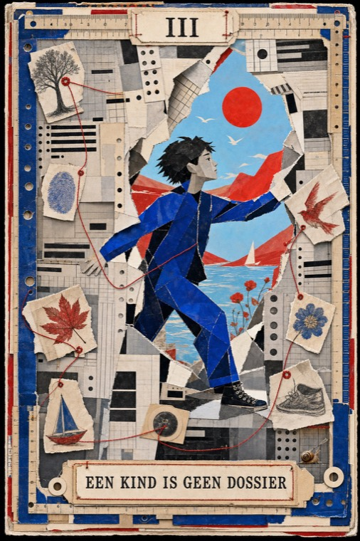
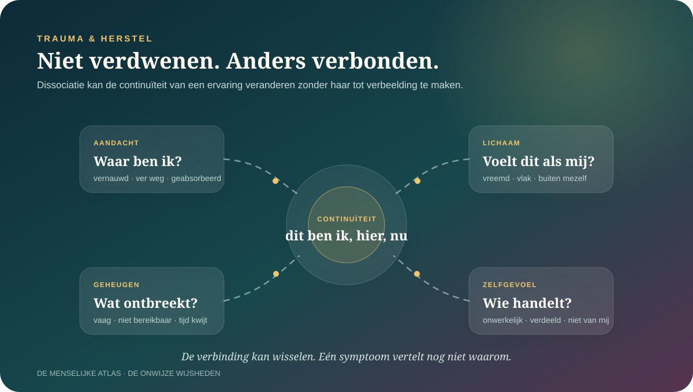
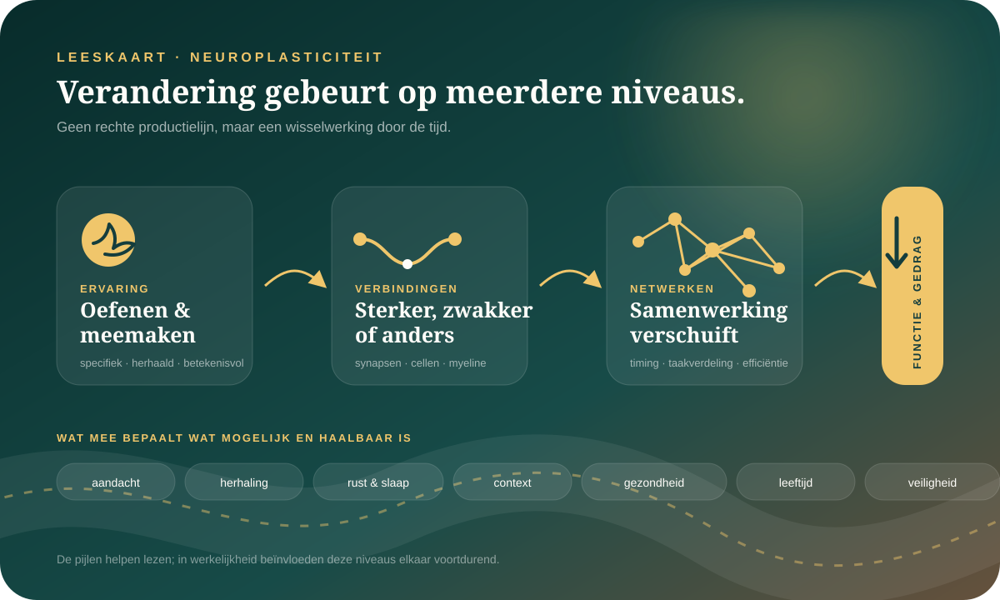
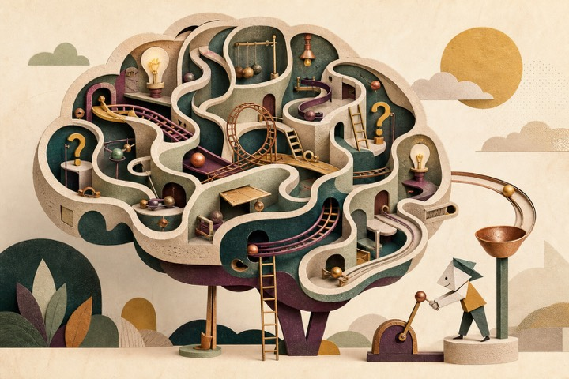
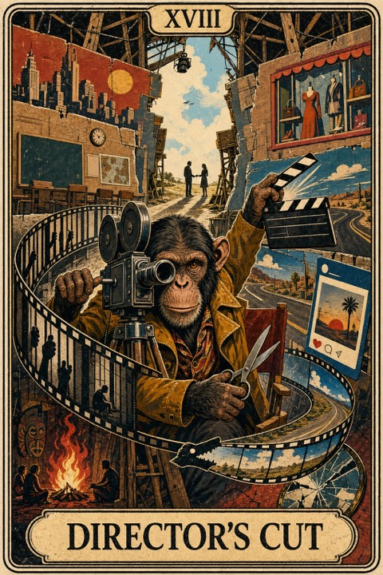
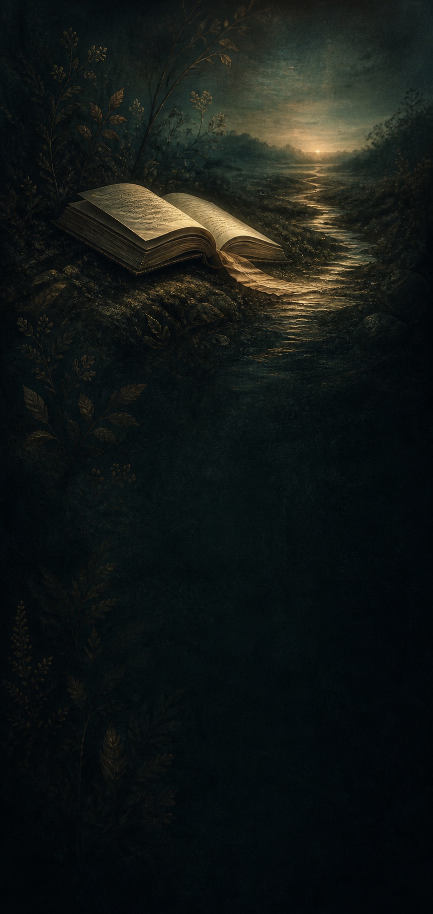
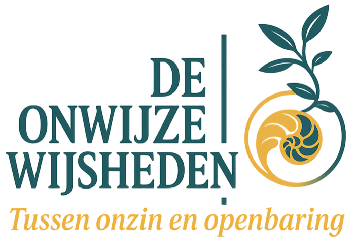
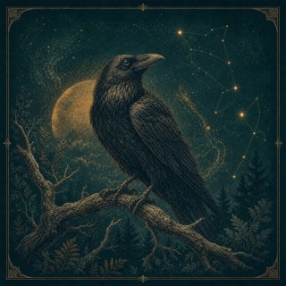
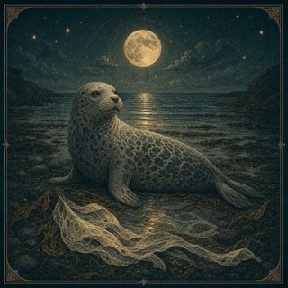

Meest recent
Nieuwe dopaminecellen werden bij Parkinson in het putamen getransplanteerd.
De vroege STEM-PD-studie ondersteunt technische haalbaarheid en voorlopige veiligheid. Ze bewijst nog niet dat celtherapie duurzaam werkt of Parkinson stopt.
Soms weet je wat goed voor je is. En doe je toch iets anders.
Je bent geen raadsel dat opgelost moet worden. Wel een mens die iets kan ontdekken over patronen, relaties, verlangen, angst en verandering.
Geen snelle mensformules. Wel onderzoek, herkenning, recente wetenschap en onverwachte zijpaden.
Waar blijf jij op hangen?
Elke ingang brengt je bij onderzoek, menselijke ervaring en een volgende vraag.
Over gewoontes, automatische routes en waarom weten nog geen veranderen is.
Dit raakt mij → Relaties Nieuw dossier · 22 minOver pleasen, zelfstilte, afwijzingsgevoeligheid en één eerlijk verschil.
Onderzoek dit patroon → Veranderen Onderzocht dossier · 7 minOver neuroplasticiteit, oefening, grenzen en wat verandering werkelijk vraagt.
Onderzoek de vraag → Verwondering Persoonlijke ervaring · 3 minOver aandacht, natuur, overvloed en de kansen die zichtbaar worden wanneer je vertraagt.
Ga mee op rooftocht →Uitgelicht

Over trauma, opvoeding en wat er gebeurt wanneer een systeem het papier beter ziet dan het kind.
Over bramen, overvloed, aandacht en alles wat je pas ziet wanneer je even van het pad raakt.

Een nieuwe kijk op dissociatie als veranderde afstemming tussen lichaam, waarneming, tijd, geheugen en handelingsgevoel.
Wat weten we nu? · bijgewerkt 18 juli 2026
Geen nieuwsstroom vol losse spectaculaire claims. Wel recente primaire studies, hun echte bewijsgrens en de dossiers die erdoor veranderen.
Meest recent
De vroege STEM-PD-studie ondersteunt technische haalbaarheid en voorlopige veiligheid. Ze bewijst nog niet dat celtherapie duurzaam werkt of Parkinson stopt.
Dopamine & leren
Met grotere tussenpozen leerden muizen in minder proeven, terwijl het totale leren over dezelfde tijd vergelijkbaar bleef. Verrassend — maar nog geen menselijke leerhack.
Ook dit is vooruitgang
De grote exenatidestudie uit 2025 was negatief en kreeg in 2026 bovendien een officiële expression of concern. Nieuwe wetenschap betekent soms een deur zorgvuldiger sluiten.
Nieuwe leerhypothese
Een actievoorspellingsfout hielp herhaalde geluid-actieverbindingen verstevigen. De stap naar menselijke dagelijkse gewoontes blijft onbewezen.
Nieuwe dossierlussen
Elke lus brengt dezelfde ontdekking langs een andere schaal: boodschapper, hersencircuit, gedrag, lichaam en behandeling.
Vier manieren om verder te gaan

01 · BegrijpenVerken de gebieden die samen een mens vormen: brein, emoties, relaties, identiteit, verandering en bewustzijn.
Open de atlas →
02 · TerugkerenVind terug wat je las, speelde, bewaarde of nog niet afmaakte — en geef je ontdekkingen een persoonlijk profiel.
Pak mijn draad op →
03 · VerwoordenPersoonlijke ervaringen, opinies, filosofische verkenningen en vragen die nog niet af zijn.
Lees wat mensen beweegt →
04 · Verder zoekenDoor ons gevonden boeken, makers, plekken en hulpmiddelen voor wie een onderwerp verder wil verkennen.
Vind een volgende stap →
Geen eindpunt voor de waarheid. Wel een uitnodiging om scherper, zachter en nieuwsgieriger te kijken.
Welkom bij De Onwijze Wijsheden
De Onwijze Wijsheden brengt wetenschap, menselijke ervaring, filosofie en speels zelfonderzoek bij elkaar. We maken steeds zichtbaar wat stevig onderzocht is, wat iemand persoonlijk ervaart en wat voorlopig nog een open gedachte blijft.
Bronnen, grenzen en nuances blijven zichtbaar.
Een verhaal is geen bewijs, maar kan wel iets herkenbaar maken.
Een hypothese mag bestaan zolang ze geen feit speelt.
Community in opbouw · Voor nieuwsgierige mensen en vreemde vogels
We bouwen aan een plek waar losse gedachten later iemand anders kunnen ontmoeten. Je kunt de opzet nu al verkennen en veilig een lokaal concept maken.
Echte profielen en openbare reacties volgen later. Wat je nu schrijft, wordt nog niet automatisch verzonden.
VoorbeeldvraagOver jezelf“Ben ik introvert, of gewoon vaak overprikkeld?”

VoorbeeldvraagOver relaties“Waarom mis ik iemand bij wie ik mezelf verloor?”